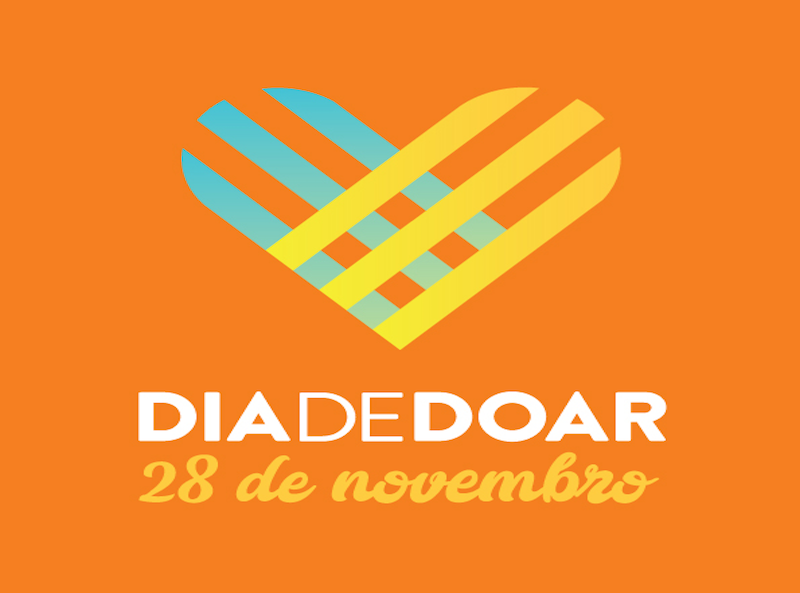

10 dicas para criar uma campanha de sucesso no #diadedoar
25 de Outubro de 2017 às 07:00
Realizado desde 2013 no Brasil, o #diadedoar foi criado com a finalidade de difundir a cultura de doação. A iniciativa teve como inspiração o #GivingTuesday, movimento surgido em 2012 nos Estados Unidos para contrapor, com solidariedade, a Black Friday, quando o varejo oferece grandes descontos, incentivando uma onda gigantesca de consumo.
Neste ano, o #diadedoar será realizado em 28 de novembro. A campanha é uma excelente oportunidade para as organizações da sociedade civil conseguirem doações, novos colaboradores e mais visibilidade. Mas para que tudo isso aconteça, é preciso planejar bem as ações em torno da data.
Para falar sobre o assunto, convidamos ninguém menos do que Kait Sheridan, que ajudou a idealizar o #GivingTuesday quando esteve à frente da organização 92Y — até hoje, ela ajuda o movimento a se expandir para outros países. Kait listou dez dicas sobre o que não pode faltar na sua mobilização. Confira e aproveite!
Neste ano, o #diadedoar será realizado em 28 de novembro. A campanha é uma excelente oportunidade para as organizações da sociedade civil conseguirem doações, novos colaboradores e mais visibilidade. Mas para que tudo isso aconteça, é preciso planejar bem as ações em torno da data.
Para falar sobre o assunto, convidamos ninguém menos do que Kait Sheridan, que ajudou a idealizar o #GivingTuesday quando esteve à frente da organização 92Y — até hoje, ela ajuda o movimento a se expandir para outros países. Kait listou dez dicas sobre o que não pode faltar na sua mobilização. Confira e aproveite!
1. Crie uma meta
Independentemente do tipo de campanha que você pretenda adotar, estabeleça uma meta ambiciosa, mas possível. Isso vai fazer com que sua equipe e seus colaboradores foquem num objetivo particular. Lembre-se de mantê-los atualizados — coloque nas redes sociais quanto você precisa para alcançar a meta.
2. Encontre quem faça um matching
Peça para que algum doador ou fundação cubra o valor arrecadado por sua campanha (matching), aumentando o impacto para seus doadores. Use isso também para dobrar a meta.
3. Seja criativo e tente coisas novas
Vá além do pedido de doação convencional. Fale sobre sua causa e o impacto da sua organização. Compartilhe histórias sobre o porquê de você fazer o que faz.
3. Seja criativo e tente coisas novas
Vá além do pedido de doação convencional. Fale sobre sua causa e o impacto da sua organização. Compartilhe histórias sobre o porquê de você fazer o que faz.
4. Aproprie-se do movimento
Crie sua própria marca #diadedoar. Várias organizações trocam as cores do logo da campanha pelas da organização. Também crie uma hashtag própria que tenha a ver com seus objetivos, como #diadedoarsapatos, #diadedoarparaozoo. Quanto mais criativa, mais sua campanha vai se destacar.
5. Recrute embaixadores
Sua comunidade pode ser sua melhor promotora. O #diadedoar é uma data em que muitas organizações e pessoas estão falando sobre retribuir. Peça para que seus seguidores, doadores, equipe e voluntários compartilhem mensagens sobre sua organização no Facebook, no Instagram e no Twitter. Faça com que se sintam envolvidos em sua campanha e os convide a ter o papel de falar sobre ela.
6. Fale com a imprensa local
Compartilhe com a imprensa sua história para o #diadedoar. É uma ótima oportunidade para se ter uma atenção extra da mídia e para falar a uma comunidade maior sobre o que sua organização está fazendo.
7. “Use a gaveta da escrivaninha”
Você não precisa fazer tudo de uma vez. Guarde algumas ideias para o próximo #diadedoar. É importante ter uma mensagem clara, uma meta e um foco para a campanha.
8. Seja social
Tuíte, poste, compartilhe, dê like, filme — faça o que você puder utilizando as tecnologias atuais para falar sobre sua campanha no #diadedoar. Lembre-se de taguear #diadedoar para que sua equipe também possa compartilhar seus posts.
9. Celebre e compartilhe seu sucesso
As pessoas querem saber dos seus resultados! Acompanhe, meça e compartilhe o que você conseguiu durante o #diadedoar, para que seus apoiadores possam celebrar com você.
10. Diga obrigado
O #diadedoar não é apenas sobre doar, mas é também sobre agradecer. Lembre-se de compartilhar sua gratidão e de dizer obrigado aos doadores e voluntários, não apenas durante a data da campanha, mas nos dias seguintes.
Notícias mais populares
Gestão
Em agosto de 2017, a revista ÉPOCA e o Instituto Doar divulgaram a primeira ediç&...
Contexto e tendências
Criado para tornar mais transparentes as parcerias entre a administração públic...
Profissional captador
A captação de recursos é fundamental para a sustentabilidade de uma organiza&cc...